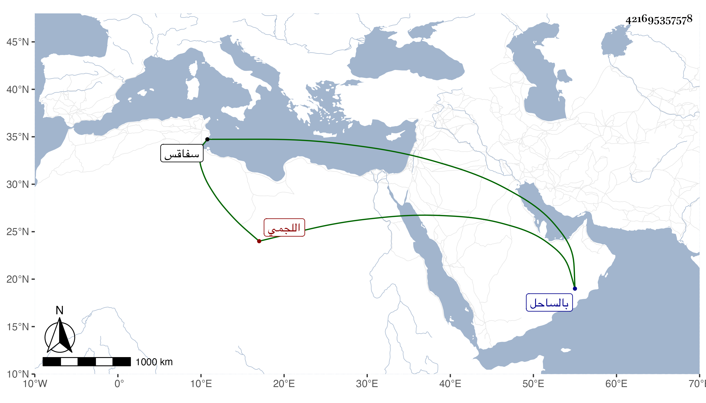

0902Sakhawi.DawLamic.ITO20230111-ara1.EIS1600.421695357578
Biography ID: 421695357578
673
عبد الغني اللجمي بفتح اللام والجيم ثم ميم بلدة بالساحل قرب سفاقس التونسي ممن أخذ عن عيسى الغبريني ويعقوب الزعبي وعبد الله الباجي وأحمد الشماع في آخرين وتقدم في المذهب مع الخبرة التامة بتصانيف القرافي الأصولية ومزيد تقلله وتأخره في الدنيا عن نظرائه . أفادنيه صاحبنا قاضي الركب وقال انه مات تقريبا بعد الستين . وهو ممن أخذ عنه .
